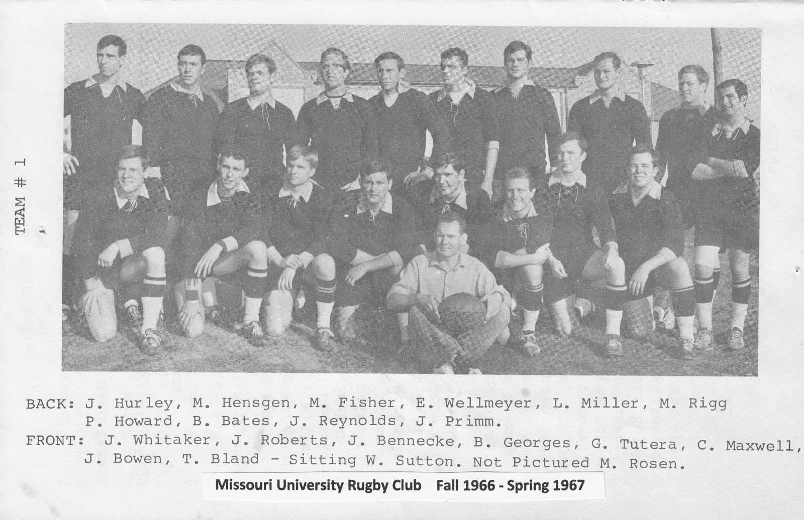
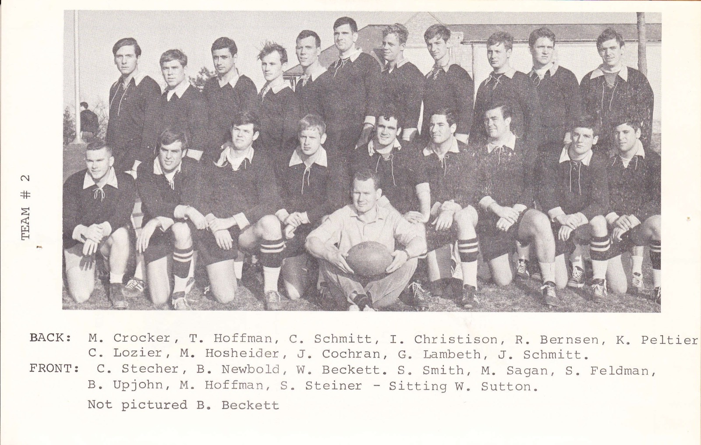

Mizzou Rugby Season Archive
First Season · Spring 1967: 5–2–2
Where Mizzou Rugby began.
The Missouri University Rugby Club was founded in Columbia in the fall of 1966 by William K. “Chip” Maxwell of Creve Coeur — an Air Force veteran who had played with the Rambler Rugby Club in St. Louis — and Warren Sutton of Auckland, New Zealand, a mathematics doctoral candidate at Mizzou who had been one of New Zealand's top rugby referees. The first officers were Maxwell as President, Gino Tutera as Vice-President, Wilson Beckett as Treasurer, and Mike Rigg as Secretary (succeeded by Iain Christison), with Sutton coaching and Joe Bowen — a former Cornell footballer who picked up rugby in Africa with the Peace Corps — captaining the “A” team.
The club's first full playing season came in the spring of 1967, and the new side posted a remarkable 5–2–2 record. The highlight was the April 7 defeat of a strong Harvard University side in Columbia; the Black & Gold also beat both Iowa and Kansas, and fielded two full teams at the St. Louis Easter Ruggerfest in March.
From “Missouri University Rugby Club — The First Years” by Dan McGuire, and the club's Spring 1967 program.
The founding season of Mizzou Rugby — Fall 1966 to Spring 1967.


| Name | Hometown |
|---|---|
| Bill Aimonette | — |
| Bill Bates | Storm Lake, IA |
| Bruce Beckett | — |
| Wilson Beckett (Treasurer) | — |
| Jay Benecke | — |
| Rich Bernsen | — |
| Ted Bland | — |
| Joe Bowen (Captain) | Wooster, OH |
| Iain Christison | Glasgow, Scotland |
| John Cochran | Hannibal, MO |
| Mike Crocker | — |
| Stan Feldman | University City, MO |
| Mike Fisher | — |
| Bill Georges | — |
| Jay Hasheider | — |
| Mike Hensgen | Kirkwood, MO |
| Bob Herbold | — |
| Mike Hoffman | South Pasadena, CA |
| Tom Hoffman | — |
| Phil Howard | Brentwood, MO |
| Joe Hurley | — |
| Gary Lambeth | — |
| John Leet | Columbia, MO |
| C. Lozier | — |
| Chip Maxwell (President) | Creve Coeur, MO |
| Larry Miller | Tulsa, OK |
| Bill Newbold | — |
| Andy Orf | St. Louis, MO |
| Ken Peltier | — |
| John Primm | — |
| Jim Reynolds | — |
| Mike Rigg (Secretary) | — |
| Joe Roberts | — |
| Mark Rosen | — |
| Mike Sagan | University City, MO |
| Chuck Schmitt | St. Ann, MO |
| John Schmitt | — |
| Steve Smith | — |
| Charlie Stecher | St. Louis, MO |
| Sandy Steiner | — |
| Bob Stoessel | — |
| Warren Sutton (Coach) | Auckland, New Zealand |
| Gino Tutera (Vice-President) | Kansas City |
| Bryant Upjohn | Kansas City |
| Ed Wellmeyer | St. Louis, MO |
| Jim Whitaker | — |
From the Missouri University Rugby Club Combined Roster 1966–69, compiled by Dan McGuire from original club programs and rosters. Spot an error or a missing teammate? Use the form below.
Roster info, season records, photos, stories — every detail helps.